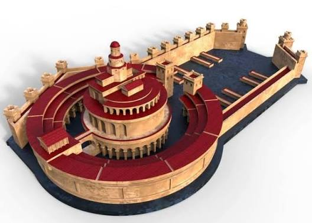
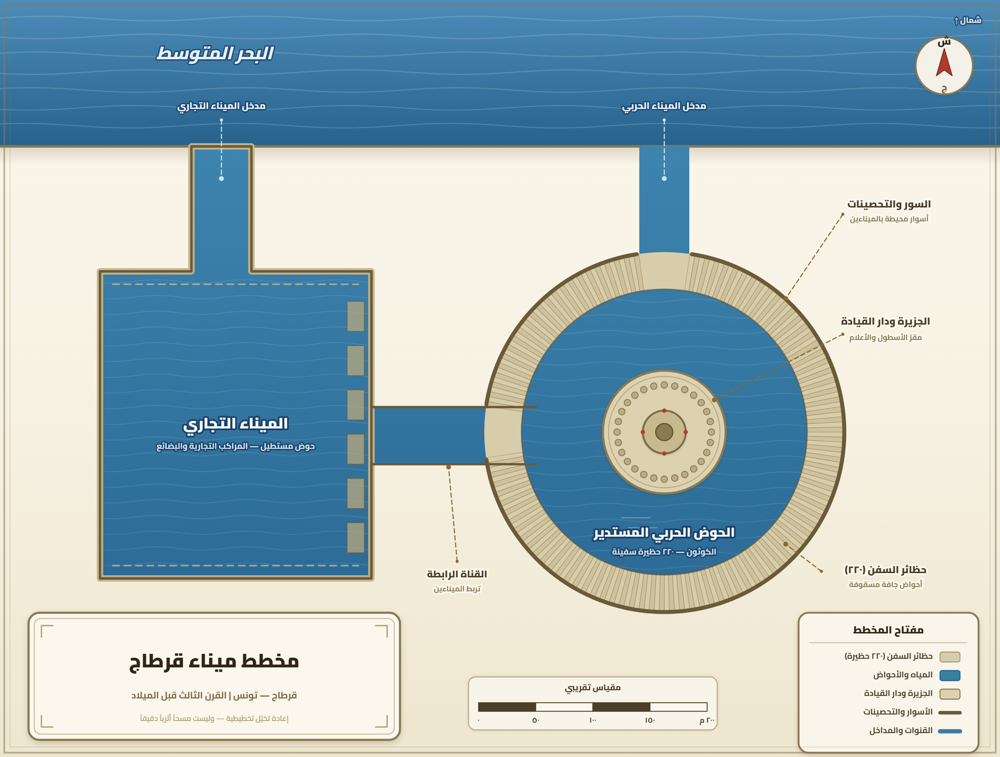

تمارين – قرطاج: الميناء والتوسع التجاري
- الميناء التجاري:
- الجزء الخارجي من الميناء القرطاجي، على هيئة حوض مستطيل الأضلاع بطول 465م وعرض 325م، ويتيح مجالاً مائياً 15 هكتاراً. تنفذ إليه السفن عبر بوابة عرضها 70م (ما يقارب 20,72م) تُغلق بسلاسل حديدية.
- الميناء العسكري:
- الجزء الداخلي من الميناء القرطاجي، على شكل حوض دائري قطره 325م، محاط بجدران مزدوجة عالية وبوابة خشبية. ويتوسطه مركز القيادة العامة، ويتيح مجالاً مائياً 8 هكتارات، ويضم أرصفة ضخمة وماوي لـ 250 سفينة حربية.
- المسلك التجاري:
- طريق بحري أو بري تستعمله السفن والقوافل التجارية لتبادل السلع بين قرطاج وأقاليم المتوسط والمحيط الأطلسي. واشتملت التجارة القرطاجية على أربعة مسالك أساسية: مسلك تارشيش، ومسلك جدر-بريطانيا، ومسلك جدر-إفريقيا، ومسلك مصر وكنعان والمستوطنات الإغريقية.
- القنصل:
- ممثل قرطاجي معيّن لدى السلطات الأجنبية للسهر على حماية المواطنين القرطاجيين وضمان حقوقهم، وهو من الإجراءات التي اتخذتها قرطاج لحماية أساطيلها وأسواقها.
- المقايضة:
- نظام تبادل تجاري استعملته قرطاج مع شعوب السواحل الإفريقية على المحيط الأطلسي، يقوم على مبادلة السلع بالسلع دون استعمال النقود، إلى جانب استعمال الفضة والذهب في شكل سبائك موزونة واستخدام العملة بداية من القرن الخامس ق.م.


تميز الميناء القرطاجي ببنية مركبة ومحيط شامل، إذ شمل: ميناءً تجارياً (الجزء الخارجي، على هيئة حوض مستطيل الأضلاع بطول 465م وعرض 325م، ويتيح مجالاً مائياً 15 هكتاراً، تنفذ إليه السفن عبر بوابة عرضها 70م تُغلق بسلاسل حديدية)، وميناءً عسكرياً (الجزء الداخلي، على شكل حوض دائري قطره 325م، محاط بجدران مزدوجة عالية وبوابة خشبية، ويتوسطه مركز القيادة العامة، ويتيح مجالاً مائياً 8 هكتارات، ويضم أرصفة ضخمة وماوي لـ 250 سفينة حربية)، إلى جانب ورشات إصلاح السفن والمخازن. وقد امتد الميناء على مساحة تتجاوز 20 هكتاراً، وتميز بموقع استراتيجي وبموضع محصّن.
| المكوّن | المساحة المائية (هكتار) |
|---|---|
| الميناء التجاري | 15 |
| الميناء العسكري | 8 |
المصدر: وصف المؤرخ الإغريقي أبيانوس في كتاب «لوبيكا» (بونيكا)
- مقدمة: تقديم التوسع القرطاجي مبكراً وامتداده في المتوسط وخارجه.
- تطوير: أولاً. مظاهر التوسع (الجزر، السواحل، الرحلات الاستكشافية)؛ ثانياً. المسالك التجارية الأساسية وعوامل القوة التجارية.
- خاتمة: أثر هذا التوسع في بناء القوة القرطاجية والمنافسة مع روما.
مقدمة
تمكنت قرطاج من التوسع مبكراً قبل إنجاز مينائها على الشكل المعروف به في القرن الثالث ق.م، إذ انطلقت سفنها من ميناء قرطاج وسيطرت على المسالك التجارية البحرية الهامة في المتوسط، وعزّزت حضورها في جزره وسواحله وخارجه.
تطوير
أولاً. مظاهر التوسع
امتد النفوذ القرطاجي في جزر المتوسط (مالطة، سردينيا، بنتلاريا، جزر البليار، غرب صقلية) وفي جنوب بلاد الإيبر (إسبانيا والبرتغال) وعلى السواحل المغربية. وتميّز الملاحون القرطاجيون المنتسبون إلى عائلة المغاوين بالجرأة وبخوض الرحلات الاستكشافية خارج المتوسط، فقام الملك «حيملكو» برحلة سنة 450 ق.م مجازياً السواحل الأوروبية الغربية شمالاً حتى السواحل البريطانية، وقام البحّار «حنّون» برحلة بداية من سنة 425 ق.م في اتجاه المحيط الأطلسي جنوباً حتى خليج الكاميرون.
ثانياً. المسالك التجارية الأساسية وعوامل القوة
اشتملت التجارة البحرية القرطاجية على أربعة مسالك أساسية: مسلك تارشيش (جنوب إسبانيا) للمعادن، ومسلك جدر-بريطانيا للقصدير، ومسلك جدر-السواحل الإفريقية الأطلسية للذهب والعاج، ومسلك مصر وكنعان والمستوطنات الإغريقية للعطور والأقمشة والخمور والزيوت. وقد وفّرت قرطاج عوامل قوتها التجارية عبر بناء السفن وتجهيز الموانئ (300 سفينة حربية ثلاثية)، وإبرام المعاهدات لحماية الأساطيل والأسواق (معاهدة 509 ق.م مع روما)، وتعيين القناصل، وتطوير المعاملات التجارية بالمقايضة والسبائك والعملة.
خاتمة
هكذا كرّست قرطاج نشاطها التجاري وعزّزت التلاقح الحضاري ودعمت جسر التواصل بين شرق المتوسط وغربه، لكن العبقرية التجارية للبونيين لم تجلب لهم محبة بقية الشعوب، مما بشّر اندلاع المواجهة مع روما حول مناطق النفوذ في غرب المتوسط.
الخط الزمني: 509 ق.م: المعاهدة مع روما ... 450 ق.م: رحلة حيملكو الاستكشافية ... 425 ق.م: رحلة حنّون الاستكشافية.